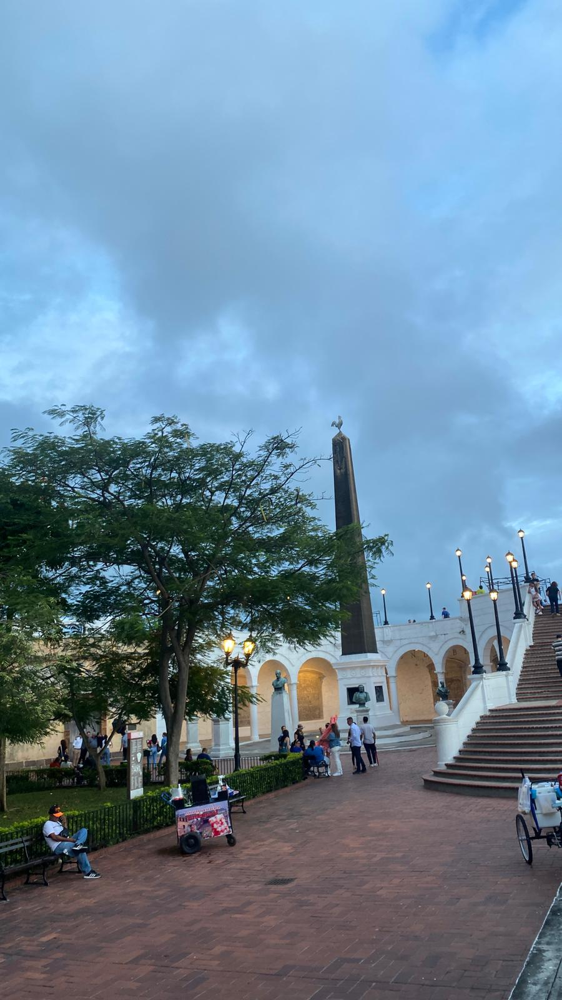
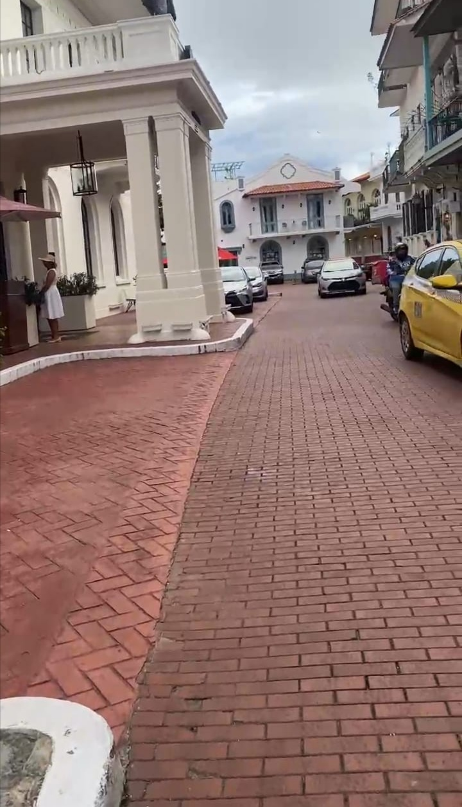
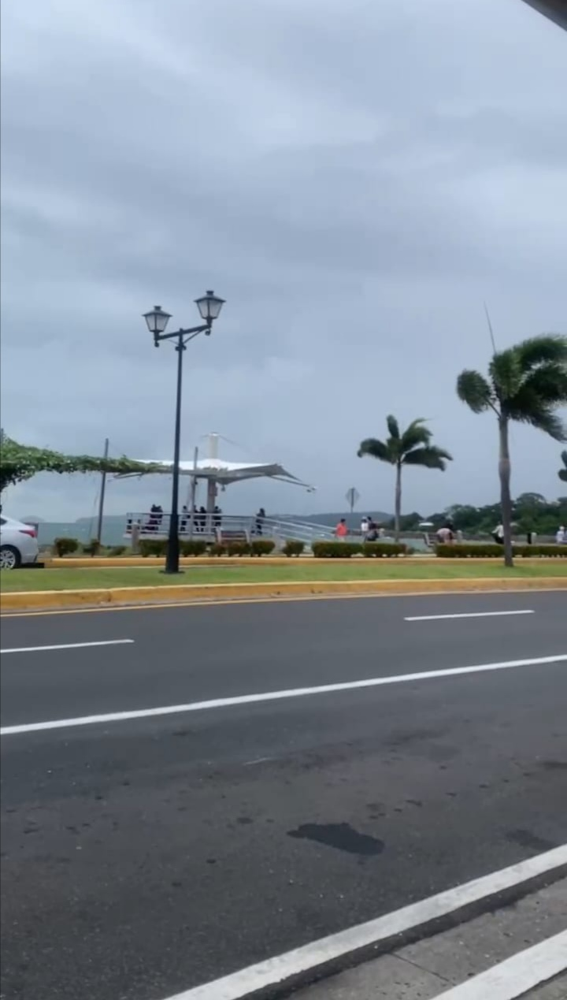

La Plaza de Francia fue erigida entre 1921 y 1922 durante la presidencia de Belisario Porras en lo que hasta ese momento era la plaza de armas
El Casco Antiguo, también conocido como Casco Viejo, es el distrito histórico de la ciudad de Panamá
El sitio formaba parte de un conjunto militar estadounidense llamado “Fuerte Amador”, establecido para proteger la entrada al Canal de Panamá
